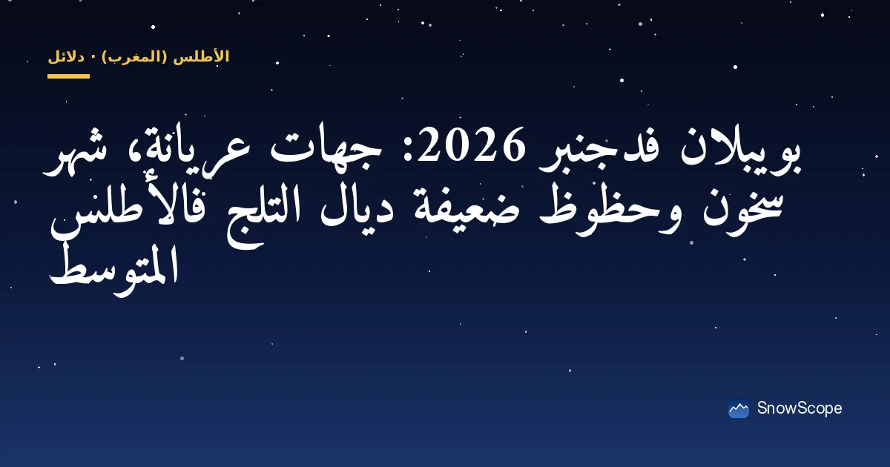
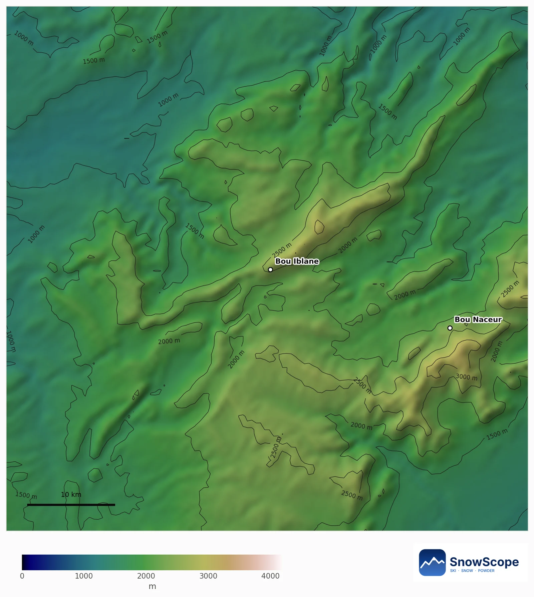
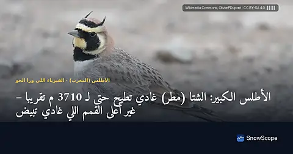
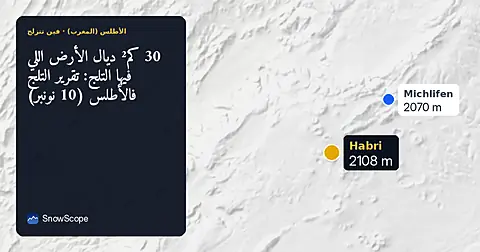

بويبلان فدجنبر 2026: جهات عريانة، شهر سخون وحظوظ ضعيفة ديال التلج فالأطلس المتوسط
Bou Iblane فِ 10 نونبر ماشي فيها التلج لا فِ الحد الفوقاني ولا فِ الجبال ديال الأطلس الأوسط الشرقي. التوقعات ديال دجنبر دافية بزاف وكتقلل من احتمالات التلج: فِ هاد الجهات اللي عادة كتساقط فيها التلج فِ الشتا، هاد السنة احتمال التلج أكثر من المعتاد بقا ما بين 30 إلى 39 بالمية.
شوف توقعات التلج مباشرة ديال Bou Iblane فالتطبيق ديال SnowScopeالعلو ديال التلج، التنبيهات والخريطة 3D، فابور.

الجبل خايب ليوم
إذا مشيت فِ الأرضي العالية حول Bou Iblane غتلقى الصخر والحصى بقا. خريطة SnowScope ديال 10 نونبر ماشي فيها التلج حتى واحد بيض ما بين 60 كم من القمة اللي فيها 2700 م. ضرنا ليك التضاريس بدالك: حد Bou Iblane الطويل، ومن الشرق كتلة Bou Naceur المنفصلة. هاد هوما القمم اللي الشتا كيبدا يساقط فيهم التلج أول ما كيتبدل الموسم.
فِ نونبر الأطلس الأوسط دافي وجاف. المنطقة ديالها 13 خلية جبلية كلهم ميالين نحو التلج أقل من دجنبرات اللي فاتو، وحتى واحد ما فيهش إشارة ديال ميل نحو أكثر. هاد الميل مجيب من الدفا، ما من الجفاف.
شنو اللي دجنبر عادة كيجيب
فِ الجهة الفوقانية ديال Bou Iblane قرب 2700 م، دجنبر معتاد كيساقط فيه 23 سم ديال التلج الجديد. فِ 31 دجنبر باقي فقط 5 سم منو على الأرض. الشمس والفترات الدافية بين الكواحل كتدوب معظمو. هاد جبال جافة ما كينبات التلج فيها إلا إذا الدارد استمر أو جا التلج الطري كل يوم.
الفرق بين دجنبرات أقل فِ التلج وأكثر فِ التلج من الشتوات اللي فاتو واسع بزاف: ربع من الشتوات اللي فاتو صحيتها ما ما فيش التلج بالمرة، وربع فيهم 11 سم أو أكثر. التوقعات ديالنا لهاد السنة كتضيق هاد الفرق نحو تاحت. احتمال ما نهايتو دجنبر أعمق من 5 سم المعتاد قاع 30 بالمية.

الدفا هو الشيء الرئيسي
51 التوقع من المركز الأوروبي ديال الطقس متفقين بقوة على حاجة واحدة: دجنبر غيكون دافي. 96 بالمية منهم كيتوقعو درجات حرارة فوق المعدل، بـ تسخين معدلو 2.3 درجة سلسيوس على الأطلس الأوسط. هاد الاتفاق بهاد الشكل على الدفا نادر بزاف.
على الأمطار والتلج التوقعات ماشية مختلفة: 41 بالمية منهم أكثر رطوبة من المعتاد، 59 بالمية أقل. معدلهم كيتوقعو 2 بالمية أكثر من الأمطار والتلج من دجنبر معتاد اللي فيه 42 ملم، زيادة صغيرة. بس فِ هاد الجبال، درجة الحرارة أهم من كمية التساقط كلها. التلج كيجاوب على الاثنين: كيتبع التساقط بقوة (الارتباط 0.86)، بس الدفا كيبعد التلج (الارتباط -0.38). شوية درجات ديال دفا إضافي كتحول التلج اللي كيساقط إلى مطر فِ الجهات المنخفضة وكتسرع الذوبان فِ الجهات العالية.


شنو دجنبرات من الماضي اللي شبهو هاد الوضع
النظام الموسمي كيلقى أقرب المطابقات التاريخية فِ دجنبر 2022، دجنبر 2010 ودجنبر 2002. هاد الثلاثة شتوات شاركو الكتل الهوائية الدافية والتساقط الضعيف للتلج على الأطلس. حتى واحد منهم ما جاب قاعدة تلج بخير فِ نهاية الشهر.
بس التاريخ كذاك كيضهر لنا ثقب نهرب منو: عاصفة أطلسية واحدة قوية كتقلب الصورة فِ أيام شوية. إذا البرد والتساقط المنظم التحقو بعضهم، Bou Iblane وجبال الجيرة ديالها كتبيض بسرعة. هاد العواصف نادرة فِ دجنبر بس ما مستحيلش. التوقعات الشهرية هي انحراف للاحتماليات، ما نبوءة كتبت فِ الحجر.

شنو المكان اللي دينا نشوف إذا التلج ياتي
إذا دجنبر جاب حدث تلج، حد Bou Iblane العالي غيلقطو الأول، خاصة على الجهات الشمالية فوق 2700 م. هاد الجهات كتحتفظ بالتلج أطول وقت لأن شمس الشتا دايم منخفضة وضعيفة. الجهات الجنوبية كتزيح غطاؤها بسرعة ما إذا اللذوبان ابتدا.
الفرق بين شهر خايب وشهر مفاجاة ثلجية غالبا كينقص إلى أسبوع أو اثنين فِ أول دجنبر. تبع التوقعات ديال 7 أيام بحزم. إذا المتوقعين قالو لك على نظام بارد ورطب من الشمال الغربي، هاك الوقت لي تخطط للصعود. بين هاد النظم، توقع اللذوبان والتراجع.
نصايح للي كيتزلجو
- خطط رحلاتك على Bou Iblane باستعمال التوقعات ديال 7 أيام، ما التوقعات الشهرية. التوجيه الأسبوعي هو اللي كيقول ليك إمتا التلج كيساقط بالفعل.
- بعد أي عاصفة ثلجية فِ دجنبر، روح للجهات الشمالية والأحرف فوق 2700 م حيث التلج كيبقى الأطول فِ شمس الشتا القوية.
- شوف خريطة SnowScope قبل لي تروح. فِ دجنبر دافي، التلج على الجهات العالية غالبا كيذيب فِ ثلاثة إلى خمسة أيام.
- جيب ماء إضافي وحماية من الشمس: حتى إذا التلج الطري ماشي على الأرضي العالية، الشمس ديال دجنبر فِ 2700 م قاسية والهوا جاف.
- إذا خططت لك عبور شتوي ديال الحد، ابتدي من أول دجنبر وتبع التوقعات كل يوم. شهر دافي وخايب كيمكن يتبدل إلى أبيض فِ لحة ما إذا جات عواصف أطلسية.
على هاد الأرقام
العلو ديال التلج فالمحطات هو أكثر تلج فالجهة الفوقانية فالتاريخ المكتوب؛ هادو تقديرات لمنطقة، ماشي قياس فنقطة وحدة. التوقعات يمكن تتبدل. ديما شوف النشرة الرسمية ديال الانهيارات قبل ما تخرج من البيست.
كيفاش تستاشهد بهاد المقال
للبحث، التعليم ولا الصحافة: الأرقام والرسومات تقدر تعاود تخدم بيهم بحرية تحت CC BY 4.0 مع هاد الاستشهاد.
SnowScope (2026), بويبلان فدجنبر 2026: جهات عريانة، شهر سخون وحظوظ ضعيفة ديال التلج فالأطلس المتوسط, https://snowscope.app/blog/ar/2026/11/bou-iblane-december-2026-snow-outlook.html, تشاف ف 2026-11-10
SnowScope (Atlas Labs). (2026, November 10). بويبلان فدجنبر 2026: جهات عريانة، شهر سخون وحظوظ ضعيفة ديال التلج فالأطلس المتوسط. SnowScope snow reports. https://snowscope.app/blog/ar/2026/11/bou-iblane-december-2026-snow-outlook.html
BibTeX
@misc{snowscope2026bouiblanedecember2026sno,
author = {{SnowScope (Atlas Labs)}},
title = {بويبلان فدجنبر 2026: جهات عريانة، شهر سخون وحظوظ ضعيفة ديال التلج فالأطلس المتوسط},
year = {2026},
month = nov,
howpublished = {\url{https://snowscope.app/blog/ar/2026/11/bou-iblane-december-2026-snow-outlook.html}},
note = {Published 2026-11-10 10:48 UTC; accessed 2026-11-10}
}· CC BY 4.0 · الطريقة، الداتا والأدوات →
تابع Bou Iblane
فابور: ميساج ملي يجي التلج، والتوقعات كل صباح.
تقارير أخرى ديال التلج

شحال ديال الما يقدر يحبس التلج ديال الأطلس ففبراير 2027: التوقع الموسمي الأوروبي سخون بتقريبا 3 درجات وفيه الشتا كثر فالغرب والجنوب، والحظوظ ديال التلج باقة ضعيفة فالأحواض ديال المغرب.

الحد ديال التلج قريب من 3710 م من 8 حتى 12 نوفمبر: شتا فـ أوكايمدن وإمليل، تلج فـ قمة توبقال. خريطة وشارط.

8 سم: هادا هو أكثر تلج كيلقاه الموديل ديالنا فالأطلس اليوم. المحطات ديال التزلج فالأطلس مافيهومش التلج اليوم. الموديل ديال التلج ديالنا كيلقى التلج …